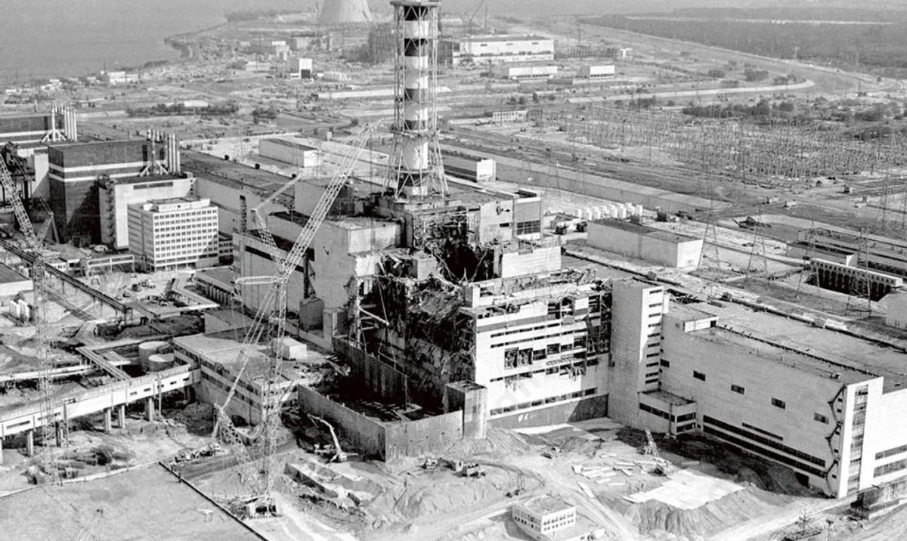

?
Skutki polityczne katastrofy w Czarnobylu to np.:
- ogromne koszty związane z zamknięciem elektrowni w Czarnobylu i dekontaminacji (proces polegający na usunięciu i dezaktywacji substancji szkodliwej, która zagraża życiu lub zdrowiu organizmu żywego) poniesione przez ZSRS, Białoruś i Ukrainę,
- manipulowanie przez władzę ZSRS informacjami,
- katastrofa miała znaczący wpływ na realizację nowej polityki sowieckiej głasnosti,
- katastrofa w Czarnobylu podważyła wiarygodność reżimu komunistycznego, rozwoju ekologicznych i społeczno-politycznych organizacji
- zacieśnienie stosunków ZSRR-USA pod koniec zimnej wojny,
- katastrofa przyczyniła się do ostatecznego rozpadu ZSRS w 1991 r. i miała duży wpływ na kształtowanie się sytuacji politycznej w Europy Wschodniej.
Skutki społeczne katastrofy w Czarnobylu to np.:
- skażenie radioaktywne wielkich obszarów Białorusi, Federacji Rosyjskiej i Ukrainy, zamieszkałych przez miliony ludzi,
- wyłączenie z produkcji znacznych gruntów rolnych i lasów,
- wzrost kosztów produkcji rolnej,
- rozwój ekologicznych i społeczno-politycznych organizacji,
- wzrost zachorowalności na raka tarczycy nastąpił na całej Białorusi i w Ukrainie oraz w czterech najbardziej dotkniętych obwodach Federacji Rosyjskiej,
Skutki psychologiczne katastrofy w Czarnobylu to np.:
- według niektórych badaczy katastrofa w Czarnobylu stanowiła "katalizator walki Ukraińców o niepodległość",
- obawa ludzi o własne życie i próba uchronienia się przed negatywnym wpływem promieniowania poprzez picie płynu Lugola, który szybko zniknął z półek w Polsce,
- stan psychozy w państwach sąsiadujących z Ukrainą,
- data 26 kwietnia 1986 r. wyznacza początek globalnej traumy związanej z ryzykiem wykorzystywania źródeł energii jądrowej.

Zniszczony reaktor w Czarnobylu, źródło zdjęcia: www.rp.pl